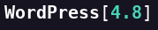
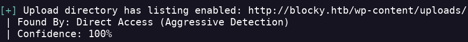
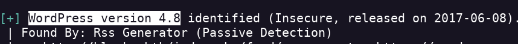

Blocky
- Realizo un escaneo de puertos nmap 10.10.10.37 -Pn -sC -sV -p- --open -T4
- Encuentro los servicios ftp, ssh y http
- Añado la dirección ip a /etc/hosts/
- Hago un whatweb para ver si encuentro algo interesante
- Veo que usa apache y wordpress

- Hago una enumeración de directorios para ver si encuentro algún login para bypasssear
- Encuentro estas rutas
- Tras ver en varias rutas me da esta pista
- Encuentro los login de phpMyAdmin y wordpress pero no tengo ningún credencial
- En la ruta blocky.htb/plugins/ encuentro 2 archivos que creo que se están usando para almacenar datos de la db.
- con jd-gui descompilamos el archivo .jar y encontramos el usuario y la contraseña
- Las introducimos en phpMyadmin y conseguimos acceder al dashboard
- Con wpscan encontramos directorios que son vectores de ataque


- Dentro del panel de phpMyAdmin encuentro el usuario Notch con su contraseña
- cambiamos la pass y entramos en wp
- Al ejectuar wpscan nos dio como posible vector el theme TwentySeventeen
- Vemos que el tema está en php por lo que usaré el php-reverse-shell de pentestmonkey
- Ejecutamos el archivo para inicializar el reverse
- Obtenemos el reverse shell y obtenemos la flag del user

- No podemos cambiarnos al usuario notch por que no tenemos una terminal
- Para iniciar sesión a través de ssh tenemos que hacerlo con la otra pass de root que obtuvimos en el .jar
- Para escalar privilegios lo primero que hago es ver que comandos puedo ejecutar como administrador con sudo -l
- Veo que puedo ejecutar todos los comandos sin pass por lo que hago sudo su y consigo la flag de root